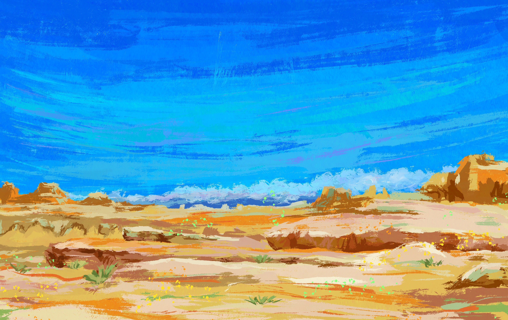
KARAMAY
新疆克拉玛依魔鬼城
在风蚀地貌中看到荒野的轮廓，蓝天和土色岩层形成强烈对照。
SERIES / XINJIANG LANDSCAPE
这些插画的原型，来自我在新疆自驾旅行时看到的风景和人文：山脉、湖泊、草原、沙漠、古城、晚霞和一路上不断展开的辽阔感。


KARAMAY
在风蚀地貌中看到荒野的轮廓，蓝天和土色岩层形成强烈对照。
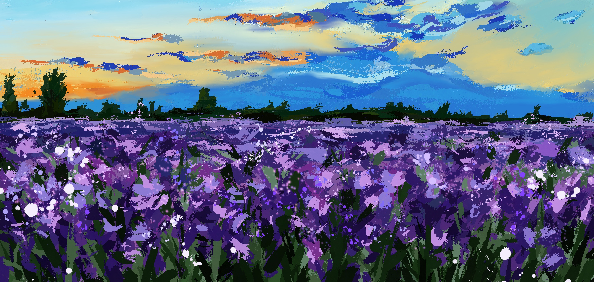
YILI
黄昏里的紫色花田，像从公路边忽然展开的一片柔软海面。
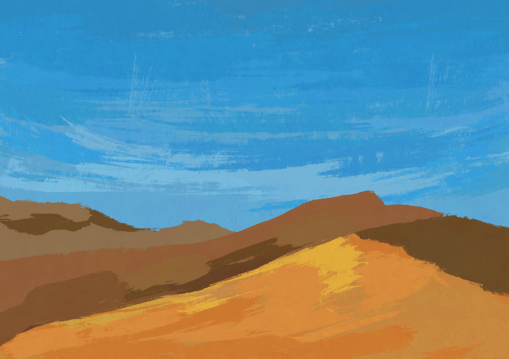
DESERT
沙丘和天空被简化成大色块，保留旅行中被热风包围的空旷感。
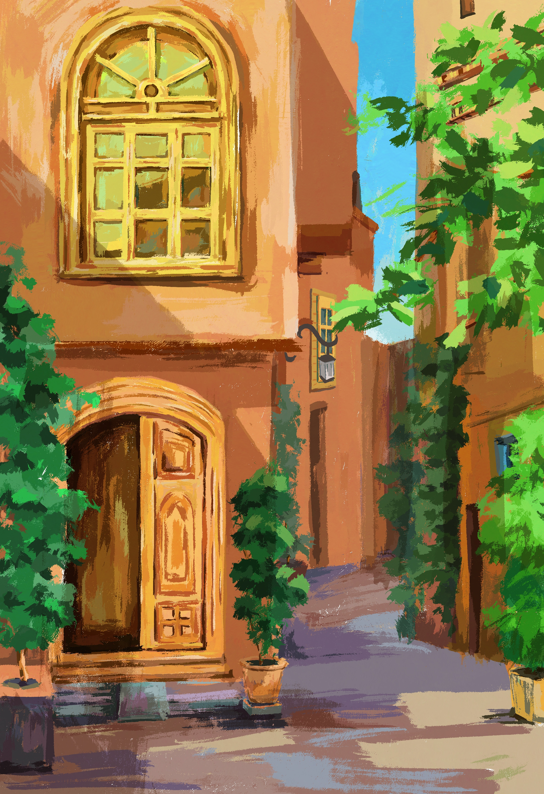
KASHGAR
古城巷道里的门窗、植物和阳光，是旅途中最有生活气息的片段。
DUKU HIGHWAY
沿着公路穿越天山，远处雪峰和云层构成路上最开阔的背景。
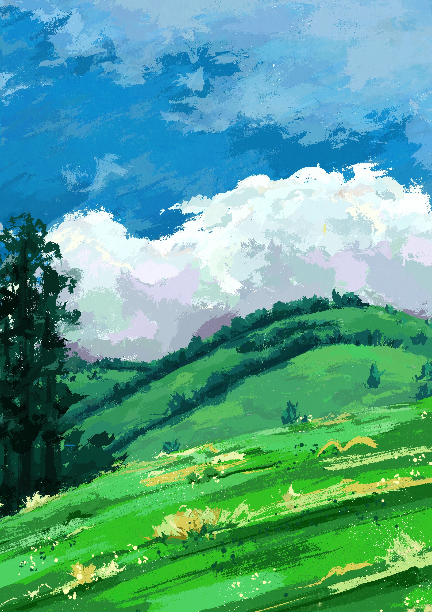
KANAS
绿色山坡和层叠云影，让喀纳斯显得像一场清凉的呼吸。
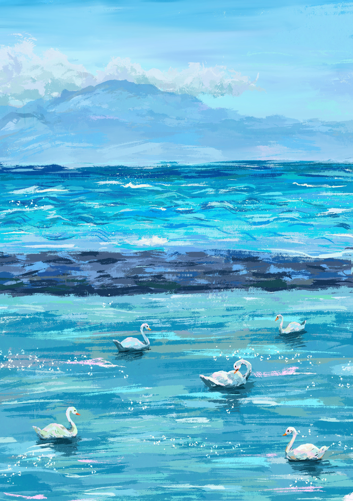
SAYRAM LAKE
湖面、远山和天鹅，记录了赛里木湖明亮而安静的一面。
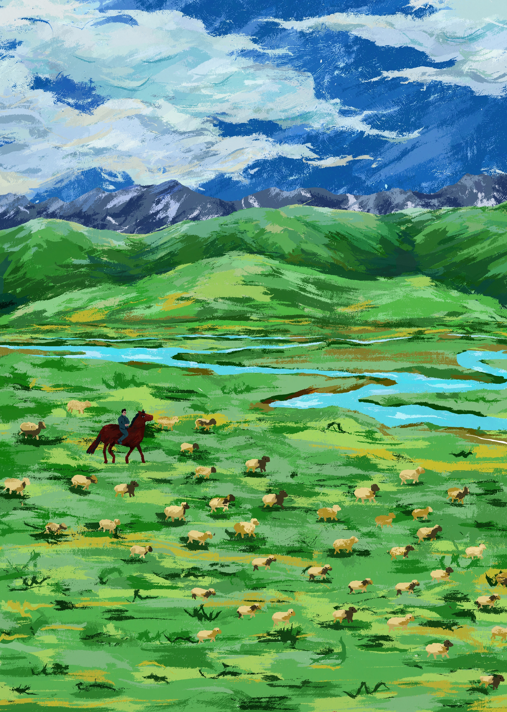
BAYANBULAK
草原、羊群、骑马的人和远处雪山，构成辽阔又温柔的旅途画面。
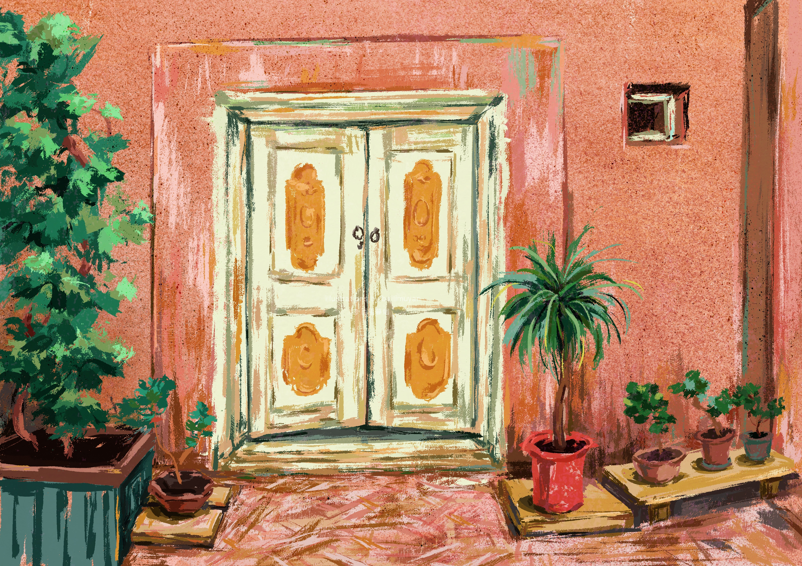
KASHGAR
门、墙面和盆栽记录了喀什日常空间里细腻的颜色。
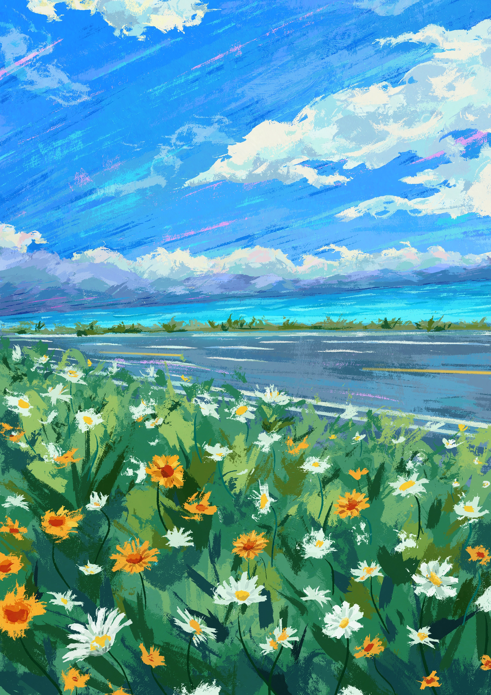
SAYRAM LAKE
湖边的花和公路把风景拉近，像是旅途中一次短暂停车。
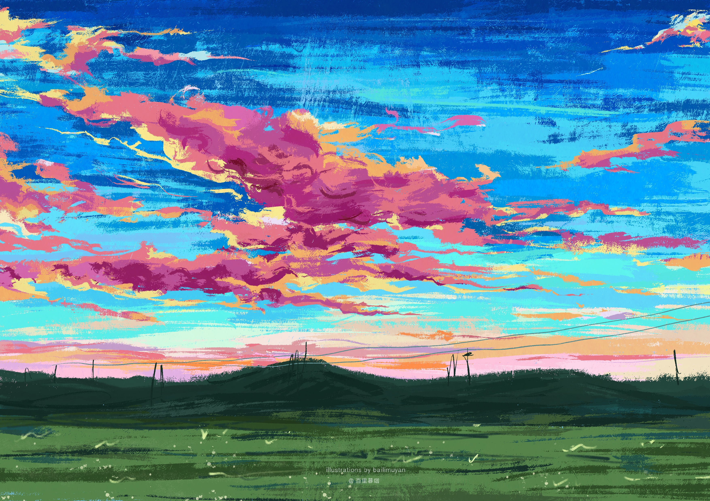
BURQIN
傍晚的云被染成热烈的粉橘色，是一天自驾结束时的天空。
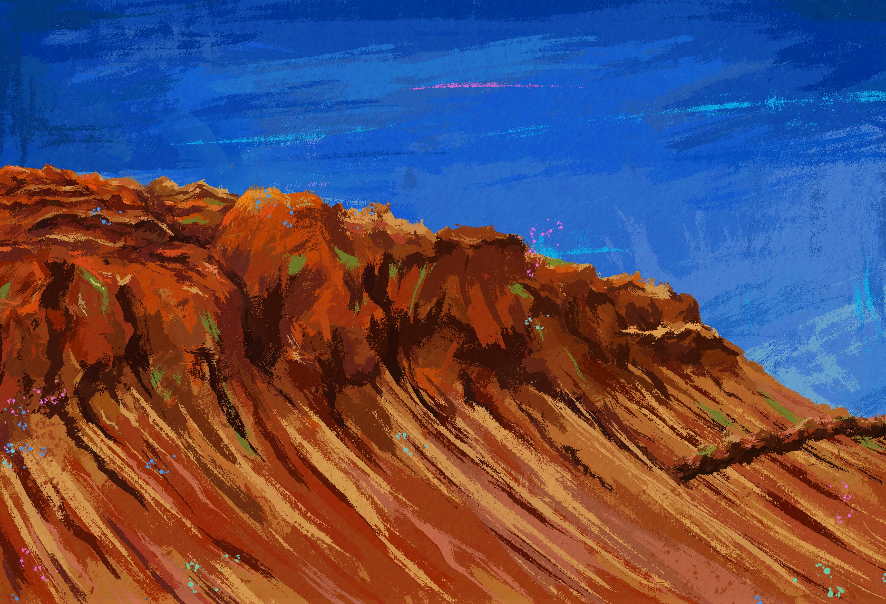
TURPAN
红色山体和蓝色天空构成高温、干燥、直接的吐鲁番记忆。